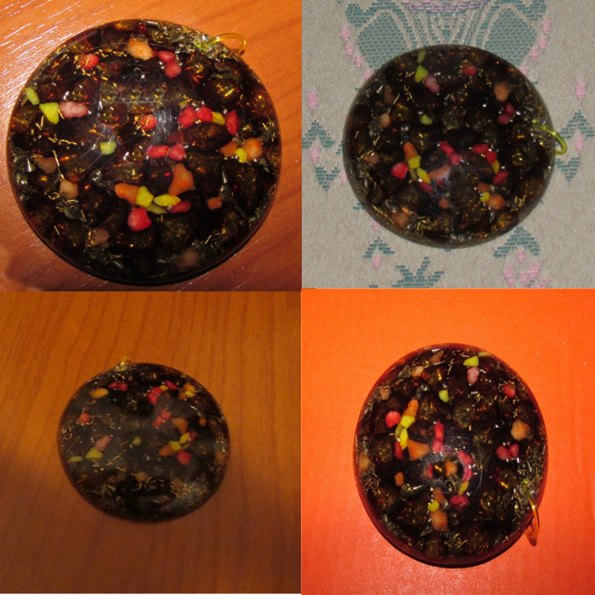
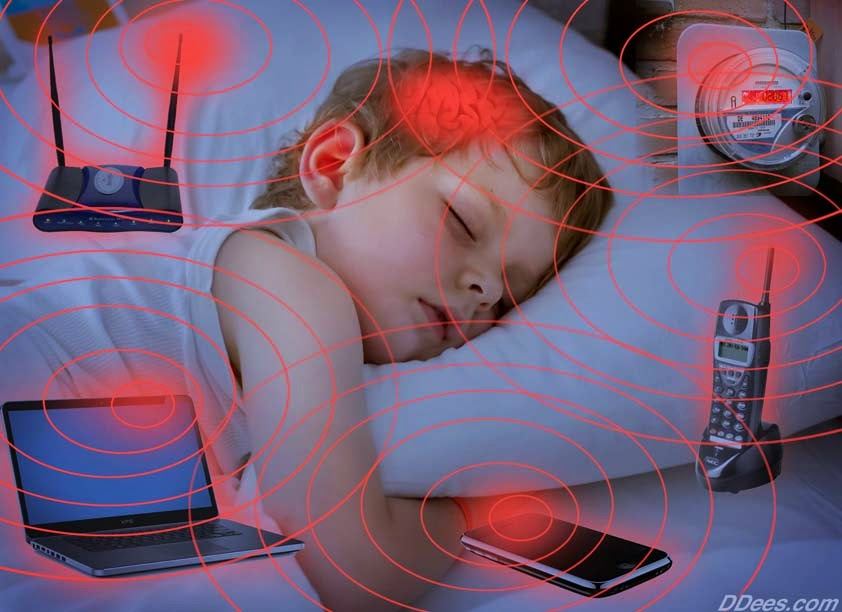
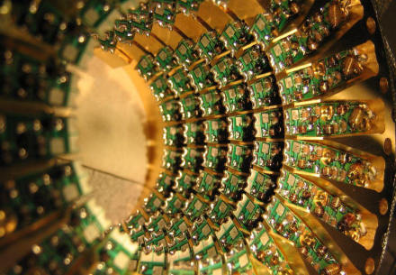

AI Website GeneratorKonačno prvi uređaj koji ima dejstvo i stvarno funkcioniše kao neutralizator štetnog elektromagnetnog zračenja.To će te se i sami uveriti uz video dokaze,naučne dokaze i profesionalnu analizu.Verovatno ste do sada dosta lutali oko ovoga ali sada ste pronašli pravu stvar.Kako sam siguran? Jednostavno lično sam isprobao uređaj i efekti su neverovatni,ali o tome malo kasnije.
Ako se pitate zašto bi vam trebao ovakav uređaj,pokušaću da objasnim.Vaše telo je stvoreno za prirodne zemaljske frekvencije od 7,8 Hz,a svakodnevno ste izloženi neverovatnim zračenjima koje idu i do nekoliko GHz.Najviše vam zrače wi fi uređaji i mobilni telefoni,računari,onda TV i sva druga tehnika jer sva tehnika radi iznad 7,8 herza što vremenom dovodi do bezbroj bolesti.Živimo u vremenu kada je tehnika sve štetnija i taj trend će se verovatno nastaviti do daljnjeg, pa vam treba adekvatna zaštita jer organizam ne može da se više prilagodi svemu ovome.
Većina ako ne i svi uređaji ovog tipa koji se mogu naći u redovnoj prodaji uglavnom ne funkcionišu.To je zbog toga što to nekima i nije u interesu,jer treba da zarade na vašim bolestima.Tako da od 100 uređaja ,možda jedan ima efekta.Šta je problem kod sličnih uređaja? Jednostavno svi rade na pogrešnom principu, jer na osnovu toga kako se reklamiraju došlo bi do toga da kada takav uređaj približite recimo mobilnom telefonu došlo bi do gašenja signala mobilnog,ali to se naravno ne dešava jer ti uređaji su uglavnom prevara.Signal ostaje bez ikakvog i najmanjeg ometanja,što sve govori o "efikasnosti" takvih uređaja.Posebno izbegavajte razne uređaje koji se masovno prodaju,posebno brendiranu robu,kao i razne gvožđurije.Gvođurija ako vam treba imate u gvožari ali to su smešne priče.Uređaj koji ću vam ja sada predstaviti radi na potpuno drugom principu i stvarno zaslužuje naziv neutralizator štetnog zračenja.Dugo sam tragao da dođem do ovako nečega,isprobao sam svašta i konačno sam našao pravu stvar i odlučio da i vama omogućim da nabavite ovako nešto.Do uređaja se inače teško dolazi i proizvodi se za sada u malim količinama zbog ručne izrade koja je ovde neophodna,pa ćete ponekad morati da rezervišete ako ga nema trenutno na lageru.
Neutralizator štetnog elektromagnetnog zračenja radi na principu bio kvantne tehnologije pa mu je i drugi naziv Bio Kvantni Generator.To je uređaj nastao nakon 40 godina istraživanja Ruskih naučnika prvenstveno za vojne svrhe.Uređaj radi na potpuno drugom principu od svih gore opisanih i po tome je verovatno jedinsven u svetu.Princip rada mu je da pretvara negativna zračenja u pozitivna odnosno u tzv. Šumanovu rezonancu od 7,8 Hz odnosno prirodnu zemljinu frekvenciju,tako da dobijate efekat kao da ste u prirodi a ne u stanu sa bezbroj štetnih uređaja.Ovo je više transformator nego neutralizator štetnog zračenja,jer što je jače štetno elektromagnetno ali i sva druga zračenja,ovaj uređaj jače generiše pozitivne Šumanove frekvencije i zato se zove generator,i na taj način ne samo što neutrališe negativno zračenje nego ga pretvara još i u pozitivno.Glavni deo uređaja su retki specijalni materijali uključujući i skupocene kristale koji imaju tu sposobnost da pretvaraju ova negativna u pozitivna zračenja.Tako da bi bila preporuka da uređaj stavljate uvek u neposrednu blizinu izvora zračenja,ili ako ih je više onda je bolje da uređaj držite kod sebe ili da imate više ovih uređaja,iako uređaj kao što sam rekao pojačava svoje dejstvo sa jačinom zračenja pa tako može da pokrije i površinu stana do 50 m2 ako se koristi na određeni specifičan način(ima detaljnije u knjizi o tome), tako da je idealno ga staviti kod jačeg izvora zračenja jer time bukvalno neutrališete u korenu izvorno zračenje.Uređaj iako relativno mali veoma je moćan.Ljudi obično zamišljaju da što je nešto veće to je efikasnije ali nije stvar u veličini,ovo je kvantna tehnologija i rad sa posebnim energijama pa ko prati radove Nikole Tesle možda će mu biti jasnije o čemu pričam.Često je sve obrnuto nego što mislite.Uređaj možete sa sobom nositi i u tašni ili ga držati kod kuće.Ako je stalno u pokretu efekat mu je manji svega metar, tako da o tome vodite računa,tada ga morate držati blizu sebe.Ukoliko koristite 2 ili više komada za zaštitu prostora efekat svakoga pojedinačno se povećava za oko 50% ako se postave na međusobnom rastojanju od oko 4 metra.Za uređaj sam saznao prateći radove i predavanja naših poznatih stručnjaka iz ovih oblasti a posebno Spasoje Vlajića.Preporuka je da koristite više ovakvih uređaja u stanu ili kući jer se tada stvara pojačan mrežni efekat pa može da pokrije mnogo veću kvadraturu.Ne zaboravite da obezbedite mesto gde spavate jer se tu provedi veliki deo života i čovek je najostljiviji upravo kada spava.Treba razmljišljati i o geo patogenim zračenjima koja su jedna od najopasnijih,što znači da ukoliko živite visoko na nekom spratu opasnost je veća,odnosno zračenje se povećava što ste na višem spratu.Pripremite se na vreme,uskoro će biti puštena 5G mreža,pa onda 6G i ko zna gde to sve vodi.
Izgled ovog uredjaja u obliku medaljona može da se malo razlikuje od serije do serije ali funkcija mu ostaje ista.Ima nastavak pomoću koga možete da ga koristite i kao ogrlicu po želji.

Neverovatan je broj bolesti koji nastaju od elektromagnetnog smoga i drugih zračenja,pa ja ih sada ne bih nabrajao kao neki reklamirajući sve i svašta,ali sam bio stvarno prijatno iznenađen čitajući stručnu literaturu o svemu ovome, koja su sva istraživanja rađena sa ovim uređajem i koliko je efikasan pa ću vam navesti jedan ekstreman primer.Rađen je eksperiment sa jednom porodicom koja je stanovala neposredno iznad transformatora u zgradi,bio je neverovatan broj zdravstvenih problema koje su imali i niko nije hteo da im kupi stan koji su prodavali na tako lošem mestu pa su vremenom pošto žive u Rusiji došli do ovog uređaja.Došla im je stručna ekipa jer je bila vrlo zainteresovana da isprobaju na njima ovako nešto i rezultati su bili neverovatni.Za samo nekoliko meseci sve bolesti su nestale ili su bile svedene na minimum problema.Ja lično sam uređaj nabavio isključivo zbog zaštite od elektromagnetnog zračenja prvenstveno računara i pošto su mi se javljale reakcije tipa bolova u mišićima i nervima (neka kombinacija toga) koji su se stalno "šetali" na telu shvatio sam da je od zračenja a ovaj uređaj je to rešio bez problema za par meseci.Što se tiče zvaničnih podataka iz knjige i njihovih istraživanja sve tegobe će vam biti smanjene za 50% za prvih mesec dana,a za 3 meseca mogu da postoje samo u tragovima ili ih više uopšte neće biti.Ovo se i meni potvrdilo u praksi.Verovali ili ne uređaj deluje i na bolesti koje su nastale i iz nekih drugih razloga,jer dovodeći vaš organizam u prirodnu frekvenciju i sama bolest nestaje.Na ono što ne može da deluje to su jedino prelomi kostiju i takve vrste povreda,možda može jedino da ubrza zarastanje.Ono na šta još pozitivno deluje je da vam popravlja raspoloženje,otklanja negativna depresivna osećanja,daje vam životnu energiju pa se osećate ponovo puni energije,otklanja stres i poboljšava san.Može da se koriti i za enegizaciju hrane,vode i biljaka,čime im znatno poboljšava svostva i daje aktivnu energiju a ne da stalno jedete mrtvu hranu i vodu.Isto kao što neutrališe negativna tehnička zračenja,može da neutrališe i energiju negativnih osoba.Mnogi me pitaju da li deluje i protiv 5G.Odgovor je 90% da deluje.Ne mogu sa sigurnošću reći jer se 5G tek pojavio,s druge strane ovo je uređaj koji je novijeg tipa iz 2020. godine(nije više ona stara verzija sa antenom koja je mogla da se ošteti,a antena se sada nalazi unutar samog uređaja),pa samim tim ako pogledate koliko je efikasan protiv svih ostalih zračenja što je testirano i provereno od strane stučnjaka i naučnika odgovor možete i sami videti.Znači sigurno bar 90% je efikasan i protiv 5G ali vreme će još ovo potvrditi.Isto tako deluje i kao jonizator prostora i vazduha pretvarajući pozitivne u negativne jone(koji su zapravo dobri joni za zdravlje).To je još jedan problem koji otklanja, a ovi štetni joni se najviše javljaju u zatvorenom prostoru gde se puno koriste tehnički uređaji.U takvim prostorima skoro i da nemate negativnih jona koji su inače veoma poželjni.Njih ima inače mnogo u prirodi ali ne možete ni stalno biti u prirodi pa su ovakvi uređaji zato i napravljeni.Svi materijali koji su korišćeni za izradu su ekološki i apsolutno bezbedni za upotrebu,za razliku od raznih kopija koje se rade i bolje da ne komentarišem njihov sastav.Ko hoće neka se raspita o svemu tome.Naravno ovo mora da utiče i na cenu.
Uređaj je preporučen i od strane našeg poznatog naučnika Spasoje Vlajića.
Možete odgledati šta kaže naš inženjer Goran Marjanović o štetnosti tehničkih zračenja i 5G kod nas i kako se zaštititi Bio Kvantnom tehnologijom i koliko je to značajno i jedino efikasno:


Ja sam na sajtu naveo neke osnovne stvari oko delovanja ovog uređaja ali postoji i stručna literatura na Srpskom o ovom uređaju koju ćete dobiti besplatno u elekronskoj formi zajedno sa porudžbinom ovog uređaja ,i tamo imate detaljno o svemu ovome.Preporučio bi svima da knjigu obavezno pročitate da vidite ozbiljnost svega ovoga.Ovo nije kao oni uređaji koje kupite pa vam posle služe za ukrašavanje kuće.
Za sva pitanja i poružbine pišite na email ili preko stranice kontakt i porudžbine.
AI Website Generator